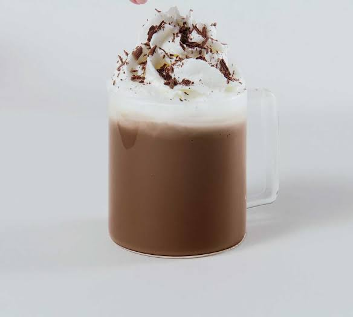

Café cremoso:
Ingredientes:
150g de açúcar refinado
25g de café solúvel
120 ml de água quente
Canela em pó
Bem-vindo ao Mundo do Café!
Explore a rica cultura do café, desde métodos de preparo até o impacto nas terras brasileiras, seja você um apaixonado ou simplesmente curioso sobre essa fascinante bebida.
O café desempenhou um papel crucial na história e tradição do Brasil desde o século XVIII, quando foi introduzido a partir da Guiana Francesa. Durante o século XIX, o ciclo do café consolidou-se como o pilar da economia brasileira, impulsionando a imigração e a industrialização. O Vale do Paraíba, em São Paulo, tornou-se um epicentro da produção cafeeira, marcando a ascensão de fazendeiros influentes, apesar de enfrentar desafios como a abolição da escravatura.
Além de moldar a economia, o café permeou a vida cotidiana, manifestando-se em rituais sociais e na arquitetura das fazendas históricas. No entanto, o século XX trouxe desafios com a crise de 1929 e as oscilações nos preços do café, resultando na diversificação da economia brasileira. Apesar disso, o café permanece uma parte intrínseca da identidade nacional, com o Brasil mantendo sua posição como principal produtor mundial.
Atualmente, a cultura do café é celebrada e apreciada, evidenciada pela ascensão de cafeterias especializadas e a valorização de métodos de preparo artesanais. Em suma, a história e tradição do café no Brasil narram uma jornada de transformação econômica e social, onde o grão transcendeu seu status de produto comercial para se tornar um elemento fundamental na rica tapeçaria cultural do país.

O café, muito mais que uma bebida estimulante, é uma experiência sensorial rica em nuances. Com uma variedade de tipos e métodos de preparo, explorar o mundo do café é mergulhar em um universo de aromas e sabores. Dos tradicionais espresso e filtrado aos métodos mais elaborados, cada xícara revela uma história única.
Os tipos de café abrangem desde os clássicos arábica e robusta até variedades especializadas de diferentes regiões do globo, cada uma com suas características distintas. O preparo, por sua vez, tornou-se uma arte, com métodos como a prensa francesa, aeropress e pour-over, permitindo que os amantes do café personalizem sua experiência de acordo com preferências individuais.
Além disso, a jornada pelo café envolve descobrir a cultura que o rodeia. Desde a colheita cuidadosa dos grãos até o ritual de degustação, o café tornou-se um fenômeno social. Cafeterias especializadas oferecem ambientes acolhedores para explorar diferentes blends, enquanto eventos de barismo e campeonatos de baristas destacam a maestria por trás de cada xícara.
Em última análise, descobrir o café vai além de uma simples bebida; é uma imersão em um universo vasto de sabores, técnicas e tradições. Então, prepare-se para uma jornada deliciosa, explorando os diversos tipos de café, métodos de preparo e descobrindo as histórias que cada xícara conta.
150g de açúcar refinado
25g de café solúvel
120 ml de água quente
Canela em pó

**Expresso:** Um café concentrado preparado forçando água quente sob pressão através de grãos finamente moídos, resultando em uma bebida encorpada e intensa.
**Café Americano:** Feito diluindo um expresso com água quente, proporcionando uma bebida mais suave e semelhante ao café tradicional.


**Café Latte:** Composto por um expresso e uma quantidade generosa de leite vaporizado, resultando em uma bebida cremosa e suave.
**Cappuccino:** Uma mistura equilibrada de expresso, leite vaporizado e espuma de leite, proporcionando uma textura rica e cremosa.


**Macchiato:** Um expresso com uma pequena quantidade de leite, criando uma bebida mais forte com um toque de suavidade.
**Mocha:** Uma combinação de expresso, leite vaporizado e xarope de chocolate, resultando em uma bebida indulgente e levemente doce.

**Affogato:** Uma sobremesa que consiste em um expresso derramado sobre uma bola de sorvete, criando uma mistura deliciosa de café e doçura.
**Cold Brew:** Café preparado ao mergulhar grãos moídos em água fria por um longo período, resultando em uma bebida suave e menos ácida.